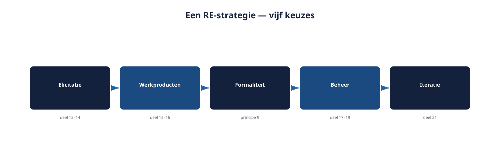
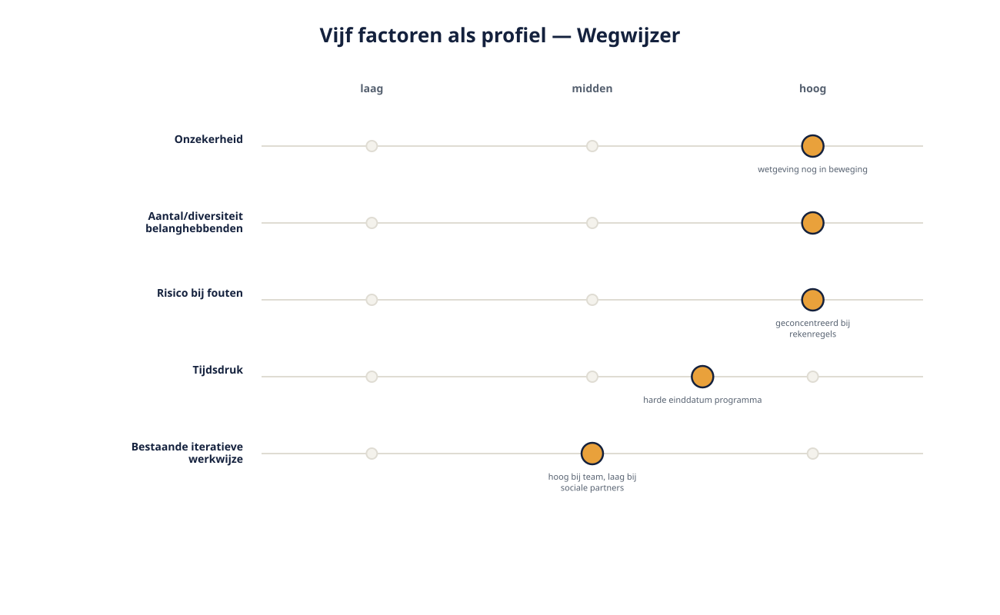

Deel 11 — Brugdeel: een RE-strategie kiezen voor een programma
Reader · Ductus-cursus Requirements engineering · niveau 2 (professional) · deel 11 van 22
Cursus Requirements Engineering — Ductus. Deze cursus bereidt voor op de CPRE-certificering van IREB en is uitdrukkelijk geen vervanging van het officiële syllabus- en examenmateriaal.
Leerdoelen
Na dit deel kun je:
- het verschil tussen requirements engineering op projectniveau en op programmaniveau uitleggen;
- de vier spanningsvelden van Wegwijzer benoemen en herkennen wat elk vraagt van de aanpak;
- de factoren benoemen die een RE-strategie bepalen, en ze toepassen op een concrete situatie;
- een eerste RE-strategie opstellen: welke technieken, werkproducten en detailniveaus, voor welke doelgroep, in welk tempo;
- de vier Advanced-modules van niveau 2 positioneren ten opzichte van wat je in niveau 1 hebt geleerd.
11.1 Van uitvoerder naar strateeg
Bij het Nabestaandenloket deed Ruben vrijwel alles zelf: hij interviewde, hij tekende de modellen, hij formuleerde de kwaliteitseisen. Zijn grootste uitdaging was vakmanschap — de juiste techniek op het juiste moment toepassen.
Bij Wegwijzer verandert de opgave. Er werken meerdere analisten mee, er is een architect (Milan) met een eigen belang, en er zijn partijen — Hans Reitsma namens de sociale partners voorop — die niet onder Rubens gezag vallen en dat ook niet willen. Rubens eerste taak is niet het ophalen van requirements. Het is het kiezen van een aanpak die voor deze specifieke situatie werkt, en die anderen kunnen volgen zonder dat Ruben zelf bij elk gesprek aanwezig is.
Dit is het verschil tussen niveau 1 en niveau 2 in één zin: niveau 1 leerde je de technieken; niveau 2 leert je wanneer, hoeveel en in welke combinatie je ze inzet — en hoe je die keuze aan anderen uitlegt en overdraagt.
11.2 Wat een RE-strategie is
Een RE-strategie is geen los document naast de requirements — het is de reeks bewuste keuzes die bepaalt hoe requirements engineering in dit specifieke programma wordt bedreven. Ze beantwoordt, voor het geheel en niet per losse requirement, dezelfde soort vragen die je in niveau 1 per requirement leerde stellen:
- Welke elicitatietechnieken (deel 4, uitgebreid in de delen 12–14) zet je in, voor welke belanghebbendengroep, en in welke volgorde?
- Welke werkproducten (deel 5, uitgebreid in de delen 15–16) gebruik je voor welk soort inhoud, en wie is de doelgroep van elk werkproduct?
- Hoeveel formaliteit (principe 9, deel 2) past bij welk onderdeel — een risicoprofiel-rekenregel vraagt meer gewicht dan een schermtekst?
- Hoe wordt beheerd (deel 9, uitgebreid in de delen 17–19) — hoe verloopt prioritering en wijzigingsbeheer als er meerdere deelsystemen en meerdere besluitvormers zijn?
- Hoe iteratief is de aanpak (deel 21) — en waar loopt die iteratieve aanpak vast op een partij die niet iteratief werkt?

Een strategie die deze vragen niet expliciet beantwoordt, bestaat evengoed — alleen dan bij toeval, en meestal geënt op de gewoonte van wie er toevallig het hardst over meepraat. Dat is precies het patroon dat in niveau 1 zoveel schade aanrichtte bij WGP 2.0, nu verplaatst naar het niveau van het hele programma in plaats van één requirement.
11.3 De vier spanningsvelden van Wegwijzer
Het casusdossier van niveau 2 introduceert vier spanningsvelden. Ze zijn niet toevallig gekozen: elk ervan vraagt om een andere nadruk in de RE-strategie, en elk krijgt in de rest van niveau 2 een eigen verdieping.
Veelstemmigheid. Sociale partners, deelnemersraad, actuaris en compliance kijken vanuit fundamenteel verschillende invalshoeken naar wat "een goede keuze voor de deelnemer" is. Dit vraagt om elicitatietechnieken die conflicten productief zichtbaar maken in plaats van ze glad te strijken — verdieping in de delen 12–14 (Elicitation).
Complexiteit van de rekenregels. De bepaling van een risicoprofiel is geen enkelvoudige beslistabel zoals in niveau 1, maar een samenhangend geheel van regels, data en scenario's. Dit vraagt om steviger modelgereedschap dan in niveau 1 volstond — verdieping in de delen 15–16 (Modeling).
Beheer over systeemgrenzen heen. Wegwijzer raakt KERN, een extern vermogensbeheerplatform, en de bredere Mutatieplatform-rapportages. Traceerbaarheid en wijzigingsbeheer moeten nu werken tussen systemen, niet alleen binnen één systeem — verdieping in de delen 17–19 (Management).
Twee kloksnelheden. Een agile ontwikkelteam naast een formeel, traag besluitvormingsproces met sociale partners. Dit vraagt om een expliciete visie op wat er wel en niet in iteraties past — verdieping in deel 21 (RE@Agile).
Elk spanningsveld is dus niet zomaar sfeertekening: het is de reden waarom de vier Advanced-modules bestaan zoals ze bestaan, en waarom niveau 2 niet simpelweg "niveau 1, maar groter" is.
11.4 Factoren die de strategie bepalen
Vijf factoren bepalen, in combinatie, welke keuzes in paragraaf 11.2 verstandig zijn. Geen van deze factoren werkt in isolatie — de kunst is ze tegen elkaar af te wegen.
Onzekerheid. Hoe goed begrijpen de betrokkenen zelf al wat er precies moet gebeuren? Bij Wegwijzer is de Wtp-wetgeving deels nog in ontwikkeling en de interpretatie ervan onderwerp van voortdurend overleg — hoge onzekerheid pleit voor kortere cycli en vroege, informele validatie boven een uitgebreid vooraf-document.
Aantal en diversiteit van belanghebbenden. Hoe meer, en hoe verschillender van achtergrond en belang, hoe meer een gestructureerde, expliciete aanpak nodig is om niemand te missen (deel 3, nu op grotere schaal) en conflicten zichtbaar te maken in plaats van ze te laten sudderen.
Risico en impact van fouten. Zorgplicht (paragraaf 3 van het casusdossier) maakt fouten in Wegwijzer potentieel schadelijk op een manier die zich pas jaren later toont. Hoe hoger dit risico, hoe zwaarder de formaliteit mag wegen voor de onderdelen waar dat risico zit — niet automatisch voor het geheel.
Tijdsdruk en planningsstructuur. De harde Wtp-deadline werkt door in het hele programma, maar Wegwijzer heeft daarbinnen een eigen, vaak krappere horizon. Een strategie moet passen bij het tempo waarin besluiten daadwerkelijk vallen, niet bij het tempo dat wenselijk zou zijn.
Mate van bestaande iteratieve werkwijze. Waar een team al agile werkt, sluit een strategie die daarop aansluit beter aan dan een strategie die een nieuw ritme oplegt — met de uitzondering dat sommige besluitvormingslagen (zoals bij sociale partners) zich niet naar dat ritme laten vormen, ongeacht de voorkeur van het ontwikkelteam.

Toegepast op Wegwijzer
| Factor | Inschatting voor Wegwijzer | Consequentie voor de strategie |
|---|---|---|
| Onzekerheid | Hoog (wetgeving en interpretatie nog in beweging) | Vroege, informele validatie; niet alles in één keer vastleggen |
| Aantal/diversiteit belanghebbenden | Hoog | Expliciete, gestructureerde elicitatie; conflicten actief opzoeken |
| Risico bij fouten | Hoog, geconcentreerd bij de rekenregels en de zorgplichtonderbouwing | Zware formaliteit specifiek daar, niet overal gelijk |
| Tijdsdruk | Middel tot hoog, met een harde einddatum op programmaniveau | Prioritering scherp koppelen aan wat de deadline echt vereist |
| Bestaande iteratieve werkwijze | Hoog bij het ontwikkelteam, laag bij sociale partners | Twee snelheden expliciet erkennen, niet forceren tot één ritme |
11.5 Een eerste RE-strategie voor Wegwijzer
Met de vijf factoren ingevuld, is een eerste, grove strategie te schetsen — die in de komende delen steeds verder wordt aangescherpt.
Elicitatie: een combinatie van gestructureerde workshops per belanghebbendengroep (om binnen elke groep snel tot een gedeeld beeld te komen) gevolgd door een expliciete conflictsessie tussen groepen waar posities botsen — in plaats van te hopen dat conflicten vanzelf naar boven komen (deel 12–14).
Modellering: de rekenregels achter het risicoprofiel worden vanaf het begin als model (beslisregels en een expliciet datamodel) vastgelegd, nooit als platte tekst — een bewuste, vroege keuze om een "paragraaf 14"-scenario op deze schaal te voorkomen (deel 15–16).
Beheer: een lichte maar consequente traceerbaarheidsketen die uitdrukkelijk over de grenzen van Wegwijzer, KERN en het vermogensbeheerplatform heen loopt, met een vaste plek waar wijzigingen die meerdere systemen raken worden samengebracht (deel 17–19).
Werkwijze: het ontwikkelteam werkt in sprints; de kaders van het fondsbestuur en de sociale partners worden als vaste randvoorwaarden behandeld die per releasemoment (niet per sprint) kunnen wijzigen — een expliciete brug tussen de twee kloksnelheden (deel 21).
Dit is een strategie op hoofdlijnen, geen compleet plan. Het doel van dit deel is niet dat je de strategie al kunt uitvoeren — dat leer je in de komende elf delen — maar dat je de keuzes die erin zitten kunt herkennen, beargumenderen, en aan anderen kunt uitleggen.
Wat verandert er als je iteratief werkt?
Bij een programma als Wegwijzer is deze vraag niet langer een losse paragraaf aan het eind van elk deel — ze wordt een van de centrale ontwerpvragen van de strategie zelf, zoals paragraaf 11.5 laat zien. Het antwoord is niet "alles iteratief" of "niets iteratief", maar een bewuste keuze per onderdeel: waar iteratie past bij het tempo van de betrokkenen, en waar een ander ritme onvermijdelijk is omdat de besluitvorming daar nu eenmaal niet iteratief verloopt.
11.6 Hoe de vier Advanced-modules zich verhouden tot niveau 1
Elke Advanced-module verdiept een deel van wat in niveau 1 is gelegd, nooit door het te vervangen:
- Elicitation (delen 12–14) bouwt voort op het ijsbergmodel en de vier technieken uit deel 4, nu toegepast op grotere, verdeeldere groepen belanghebbenden.
- Modeling (delen 15–16) bouwt voort op de drie modeltypen uit deel 7, met complexere data- en beslisregelmodellen die de eenvoudige beslistabel uit deel 5 overstijgen.
- Management (delen 17–19) bouwt voort op de beheerbasis en het wijzigingsbeheer uit deel 9, nu toegepast over systeemgrenzen heen.
- RE@Agile (deel 21) bouwt voort op de terugkerende paragraaf "wat verandert er als je iteratief werkt" uit elk deel van niveau 1, en maakt daar nu een eigen, samenhangend geheel van.
Niets van wat je in niveau 1 leerde, wordt hier ingehaald door iets nieuws. Het wordt uitgebreid naar een schaal waarop het vakmanschap alleen niet meer volstaat — waar een strategie nodig is om dat vakmanschap ook zonder Rubens persoonlijke aanwezigheid overeind te houden.
Samenvatting
- Op programmaniveau verschuift de opgave van vakmanschap naar strategie: een aanpak kiezen die anderen kunnen volgen.
- Wegwijzer kent vier spanningsvelden — veelstemmigheid, complexiteit van rekenregels, beheer over systeemgrenzen, twee kloksnelheden — die de vier Advanced-modules van niveau 2 structureren.
- Vijf factoren bepalen de strategie: onzekerheid, aantal/diversiteit belanghebbenden, risico bij fouten, tijdsdruk, bestaande iteratieve werkwijze.
- Een eerste, grove strategie voor Wegwijzer is nu geschetst; de komende delen werken elk onderdeel verder uit.
- Elke Advanced-module bouwt voort op niveau 1, vervangt het niet.
Begrippen
RE-strategie · programmaniveau · spanningsveld · onzekerheid · formaliteit · kloksnelheid
Leeswijzer naar het volgende deel
Deel 12 opent de Elicitation-module met gevorderde stakeholderanalyse: hoe je in een veelstemmige omgeving als Wegwijzer verder komt dan de technieken uit niveau 1.